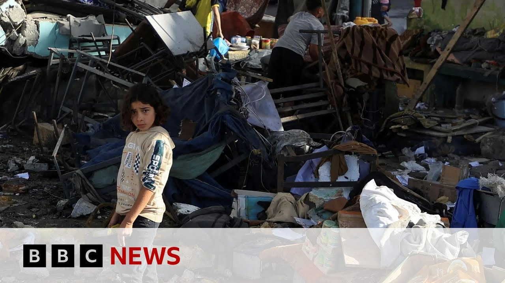

【欢迎回来。我们继续关注头条新闻。过去一夜，以色列两次空袭造成50多名巴勒斯坦人死亡，其中包括一所收容流离失所家庭的学校。这两起袭击是以色列在加沙北部大规模攻势的一部分，过去一周攻势升级，国际社会对以色列施压要求允许更多援助进入加沙。以色列不允许包括BBC在内的国际媒体从加沙或耶路撒冷进行报道。尤兰报道。小瓦·阿哈利尔幸存，但她的母亲和两个兄姐未能生还。教室变成避难所，一夜之间化为火海。以色列军方称袭击了加沙城的“关键恐怖分子”并采取措施避免平民伤亡，但仍有儿童遇难。“太可怕了，”一位从废墟中被救出的母亲说，“无法形容。残肢、烧焦的尸体、燃烧的气味。”我向真主发誓，我们的心已死。我们震惊，我们精疲力尽。受够了。今天，在睡梦中遇难者被送往最后的安息地。死亡人数持续上升。据报道，以色列北部空袭导致一个家庭的17名成员丧生。以军加强攻势之际，参谋长称哈马斯承受巨大压力。以色列计划占领整个加沙，强硬派部长本-格维尔对此表示支持，并在耶路撒冷日挑衅性访问该市最具争议的圣地。我们在此为被扣押人员祈祷，愿他们平安归来，愿战争胜利。即使以色列上周放宽了为期两个月的全面封锁，加沙仍面临大规模饥荒。以色列希望由新机构接管援助分发，但其负责人已辞职，称该计划违背人道原则。今天，小瓦尔达回到加沙城被炸避难所的废墟。尚未意识到个人悲剧的她，随着国际社会对战争苦难的批评日益加剧，她的创伤只会加深。现在连线耶路撒冷的尤兰。首先关注援助问题。加沙人道基金会备受争议，它得到美国和以色列支持，但援助进入极其复杂。他们称已开始工作。我们对他们的行动和分发计划了解多少？首先，尽管以色列11周的全面封锁一周前略有放松，但整个加沙地带援助仍极度短缺。新成立的加沙人道基金会早间声明称卡车已装载完毕准备出发，计划下周覆盖100万巴勒斯坦人（占加沙一半人口）。其工作将集中在南部分发点，使用武装安保承包商，并让经以军筛查的家庭代表步行领取数日口粮。联合国等援助机构批评该计划不道德且不可行。该组织执行主任杰克·伍德（前美国海军陆战队员转社会企业家）宣布辞职，称计划无法遵守人道原则（中立、公正、独立），与联合国批评一致。但以色列坚称要改变加沙援助分发方式，指控大量物资被哈马斯挪用（哈马斯否认），联合国则表示有严格监督机制。尤兰，我们获悉过去一夜至少54名巴勒斯坦人遇难，最新消息称库纳斯又发布撤离令。人们能去哪儿？汉尤尼斯居民被告知向西沿海岸前往阿尔-穆阿西地区。此前加沙南部发射三枚火箭弹（两枚落在境内，一枚被拦截）。以媒报道，以军计划未来两月控制加沙75%地区，将200万居民迁至南部、中部和加沙城中心三个区域。尤兰，我们刚收到巴勒斯坦消息源关于新停火协议的警报。有何进展？有未经证实的报道称哈马斯与特朗普政府秘密渠道提议以70天停火换取10名被扣人员释放（据信至少20名人质仍存活），但以方未确认该消息。埃及时任重要调解方，原定在开罗举行的会谈也未获证实。】
Summary: Welcome back.
摘要： 欢迎回来。

⏱️ Estimated Reading Time: 9 min
Let's return to our top story.
我们继续关注头条新闻。
More than 50 Palestinians have been killed in two separate Israeli air strikes overnight, including a strike on a school that was sheltering displaced families.
过去一夜，以色列两次空袭造成50多名巴勒斯坦人死亡，其中包括一所收容流离失所家庭的学校。
The twin attacks are part of a broader Israeli offensive in the north of the territory that has escalated over the past week amid growing international pressure on the Israelis to allow more aid into Gaza.
这两起袭击是以色列在加沙北部大规模攻势的一部分，过去一周攻势升级，国际社会对以色列施压要求允许更多援助进入加沙。
Israel does not allow international media organizations, including the BBC, to report from Gaza, from Jerusalem.
以色列不允许包括BBC在内的国际媒体从加沙或耶路撒冷进行报道。
Here's Yulan now.
尤兰报道。
Little Wa Ahalil made it out alive, but her mother and two older siblings did not.
小瓦·阿哈利尔幸存，但她的母亲和两个兄姐未能生还。
A classroom turned shelter turned inferno overnight.
教室变成避难所，一夜之间化为火海。
Israel's military says it attacked what it called key terrorists here in Gaza City and took steps to stop civilians getting hurt, but children were killed.
以色列军方称袭击了加沙城的“关键恐怖分子”并采取措施避免平民伤亡，但仍有儿童遇难。
"It was horrific," says one displaced mother, pulled from the rubble with her son.
“太可怕了，”一位从废墟中被救出的母亲说。
"It was indescribable. Body parts, charred bodies, the smell of burning."
“无法形容。残肢、烧焦的尸体、燃烧的气味。”
I swear to God, our hearts have died.
我向真主发誓，我们的心已死。
We're shaken.
我们震惊。
We're exhausted.
我们精疲力尽。
Enough.
受够了。
Those killed in their sleep were carried to their final resting places today.
今天，在睡梦中遇难者被送往最后的安息地。
And the number of dead continue to rise.
死亡人数持续上升。
17 members of one family reportedly killed in an Israeli strike in the north.
据报道，以色列北部空袭导致一个家庭的17名成员丧生。
As Israel's military steps up its offensive, the chief of staff says Hamas is under immense pressure.
以军加强攻势之际，参谋长称哈马斯承受巨大压力。
Israel plans to seize all of Gaza.
以色列计划占领整个加沙。
A big supporter of that is its hardline minister Bengavir, marking Israel's Jerusalem day with a provocative visit to the city's most contested holy site.
强硬派部长本-格维尔对此表示支持，并在耶路撒冷日挑衅性访问该市最具争议的圣地。
We held a prayer here for the well-being of the hostages that they all return home safely and for victory in the war.
我们在此为被扣押人员祈祷，愿他们平安归来，愿战争胜利。
There's mass hunger in Gaza even after Israel eased its two-monthlong total blockade last week.
即使以色列上周放宽了为期两个月的全面封锁，加沙仍面临大规模饥荒。
It wants aid delivery to be taken over by a new organization, but its head has now resigned, saying the idea doesn't stick to humanitarian principles.
以色列希望由新机构接管援助分发，但其负责人已辞职，称该计划违背人道原则。
Today, young Warda returned to the ruins of the bombed shelter in Gaza City.
今天，小瓦尔达回到加沙城被炸避难所的废墟。
As yet unaware of her personal loss, amid growing international criticism over the suffering caused by this war, her trauma will only deepen.
尚未意识到个人悲剧的她，随着国际社会对战争苦难的批评日益加剧，她的创伤只会加深。
And we can draw now join your land live in Jerusalem.
现在连线耶路撒冷的尤兰。
Let's focus a bit firstly then your land on aid.
首先关注援助问题。
The Gaza Humanitarian Foundation.
加沙人道基金会。
It's controversial.
它备受争议。
It's backed by the US and by Israel, but it's so complicated getting aid in.
它得到美国和以色列支持，但援助进入极其复杂。
And they say they've started to begin their work there.
他们称已开始工作。
How much do we know about what they're doing and how they're going to move around, how they plan to distribute aid?
我们对他们的行动和分发计划了解多少？
Well, first of all, remember that aid is still in dangerously short supply across the entire Gaza Strip despite the fact that Israel did begin to ease slightly its total blockade that has gone on for 11 weeks um just one week ago.
首先，尽管以色列11周的全面封锁一周前略有放松，但整个加沙地带援助仍极度短缺。
Now, we had a statement from this newly created Gaza Humanitarian Foundation early in the day saying that its trucks were loaded and ready to go.
新成立的加沙人道基金会早间声明称卡车已装载完毕准备出发。
It planned in the next week to reach 1 million Palestinians.
计划下周覆盖100万巴勒斯坦人。
That's half of the population of the strip.
占加沙一半人口。
Um it's supposed to be working out of this handful of distribution sites really concentrated in the south.
其工作将集中在南部分发点。
Um and its work will involve um using armed uh security contractors and having gardens, one representative of each family who's been specially screened crossing Israeli military lines uh to pick up supplies of food for their family on foot.
使用武装安保承包商，并让经以军筛查的家庭代表步行领取数日口粮。
It's supposed to last them then um several days.
可维持数日。
And you know, it's been already sort of um dismissed by the UN and other aid agencies that have been working in Gaza as being unethical and unworkable.
联合国等援助机构批评该计划不道德且不可行。
Um remember that they operate or have been operating out of something like 400 distribution points.
该组织运作约400个分发点。
And then just underscoring all the confusion that there is around um this newly created organization, we had the executive director, Jake Wood, he's a former US Marine turned social entrepreneur um announcing his resignation and he said that that was because the plan could not adhere to humanitarian principles, neutrality, impartiality, independence, similar to the criticisms that we've been having uh from the UN.
执行主任杰克·伍德（前美国海军陆战队员转社会企业家）宣布辞职，称计划无法遵守人道原则（中立、公正、独立），与联合国批评一致。
Um but still, you know, Israel says that it wants to change the way the aid is distributed in Gaza.
但以色列坚称要改变加沙援助分发方式。
Uh claims that significant amount of supplies have been diverted to Hamas, something that Hamas denies with the UN and others saying that they have had strong supervision mechanisms to make sure that doesn't happen.
指控大量物资被哈马斯挪用（哈马斯否认），联合国则表示有严格监督机制。
And on the ground, Yoland, we're hearing at least 54 Palestinians were killed overnight.
尤兰，我们获悉过去一夜至少54名巴勒斯坦人遇难。
And then in the past hour or so, uh, reports that another evacuation order has been issued for Kunas.
最新消息称库纳斯又发布撤离令。
Where will people go?
人们能去哪儿？
That's right.
没错。
People have been told to leave Hanunas in particular to head um westwards towards this Al-Muasi area um along the coast.
汉尤尼斯居民被告知向西沿海岸前往阿尔-穆阿西地区。
This is after three rockets were fired from southern Gaza earlier in the day, the Israeli military says um with two of those actually landing inside the strip and one of them intercepted.
此前加沙南部发射三枚火箭弹（两枚落在境内，一枚被拦截）。
Um and you know already people in Nunas have been fleeing making that journey and there is now this um plan which is causing a lot of worry um being reported in the Israeli media with um the army said to be planning over the next two months um to take 75% of the Gaza Strip and move uh the 2 million people of Gaza into three areas uh one in the south, one in the center and one in the heart of Gaza City.
以媒报道，以军计划未来两月控制加沙75%地区，将200万居民迁至南部、中部和加沙城中心三个区域。
Yoland, as we're speaking, I'm also just monitoring the news wires and we're getting some alerts from Palestinian sources who are talking about a new ceasefire deal.
尤兰，我们刚收到巴勒斯坦消息源关于新停火协议的警报。
What are they referencing there?
有何进展？
Do you know what are the developments on that front?
前线有何动态？
I mean, there have been some reports that we've not had confirmed to us um of a back channel um between Hamas and the Trump administration proposing a 70-day ceasefire for the return of 10 um of the hostages that Hamas is still holding.
有未经证实的报道称哈马斯与特朗普政府秘密渠道提议以70天停火换取10名被扣人员释放。
Of course, it's believed that um at least 20 of the hostages are still alive being held inside Gaza, but this is very unclear the picture that's gone at the moment.
据信至少20名人质仍存活，但目前情况不明。
There's certainly not been any confirmation that this is something realistic uh from the Israeli side.
以方未确认该消息。
We did hear as well that there were some uh talks that were scheduled to happen in Cairo with Egypt being such an important uh key mediator in the region.
埃及时任重要调解方，原定在开罗举行的会谈也未获证实。